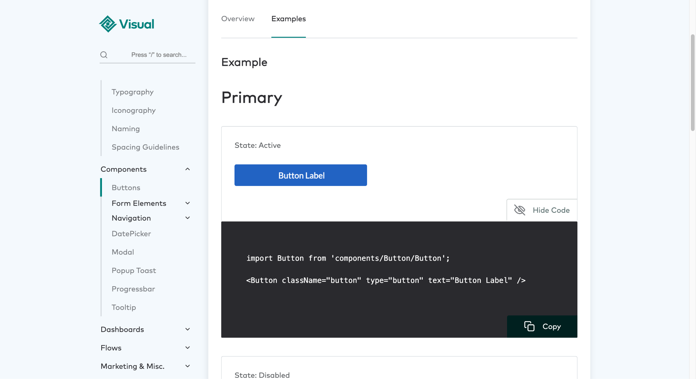
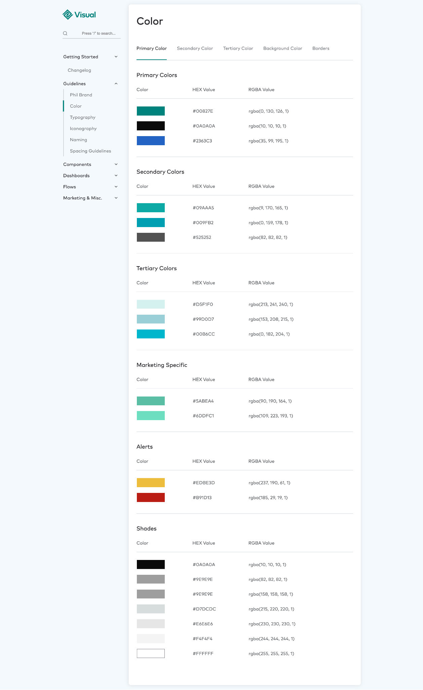
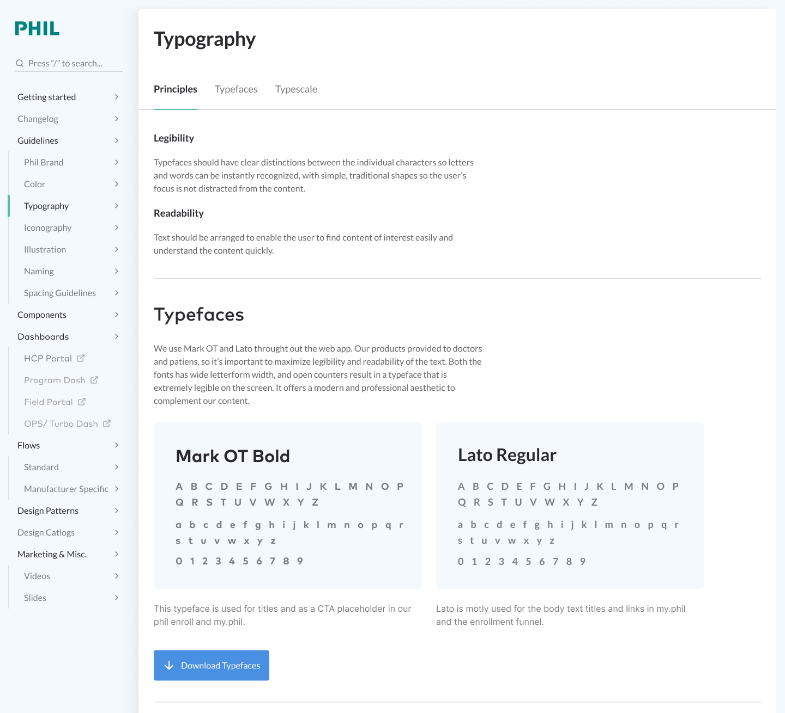
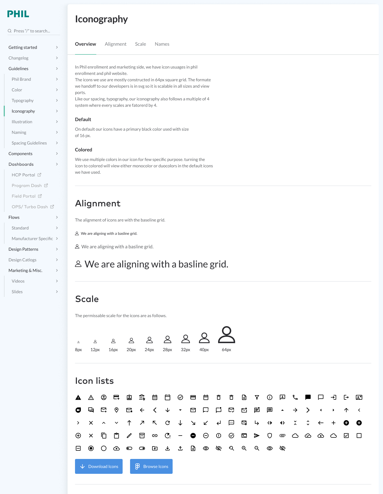
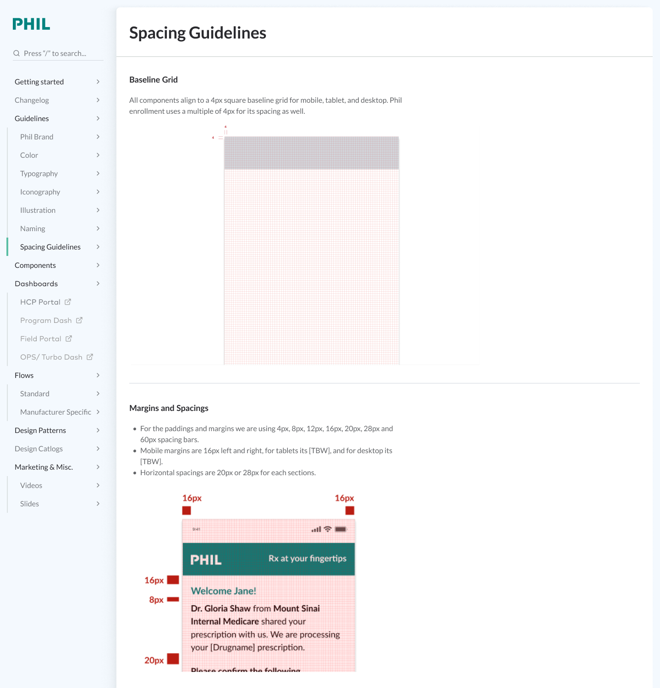
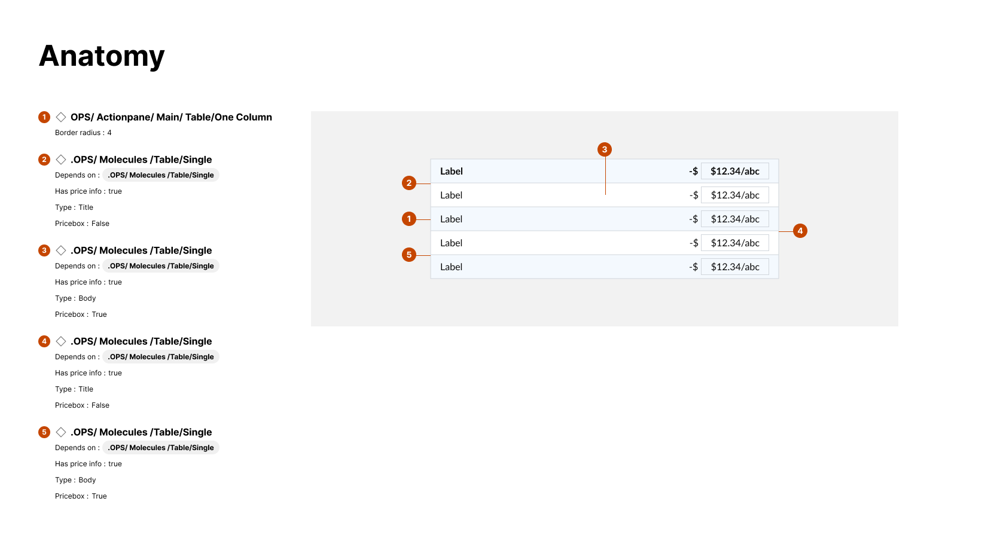
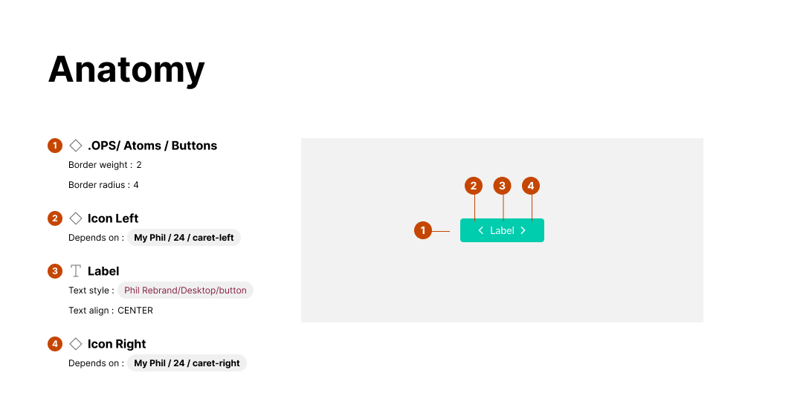
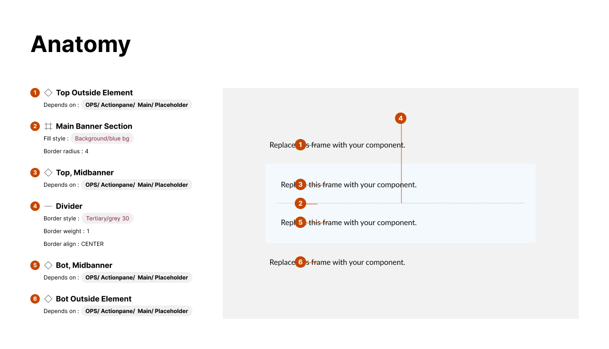
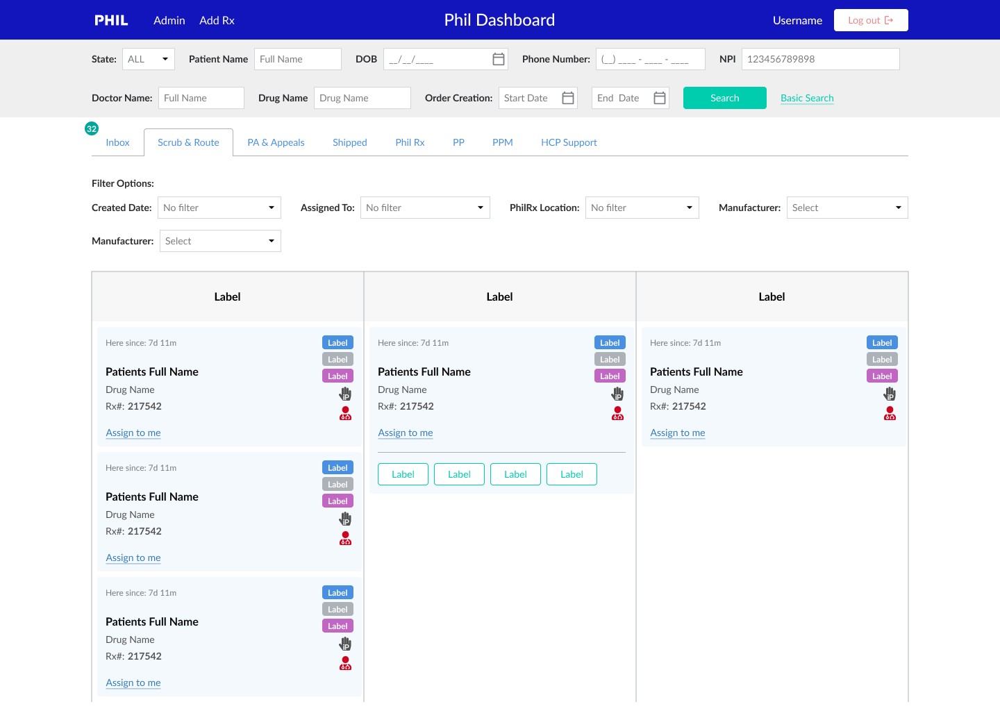

← All projects
A shared foundation for operator, partner and patient products
Built Phil's design system from scratch, starting from what each product needed and setting the tokens, component libraries and engineering governance that kept every platform consistent.
01Foundation
Tokens and component libraries shared across every product, with accessibility built into shared patterns.
02Governance
Engineering governance and handoff practices that set how components moved from Figma into production.
03Ownership
Set architecture and standards. Offshore designers maintained it with QA, so onshore seniors owned research.










